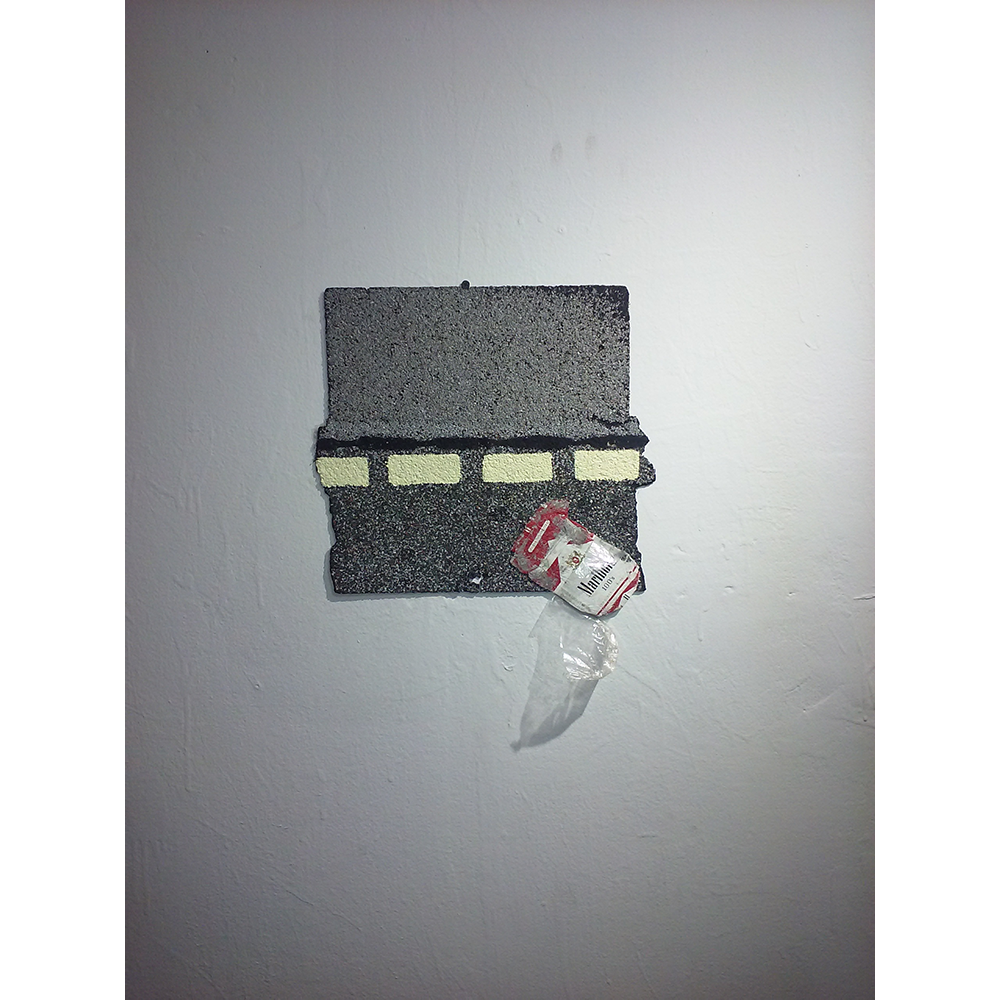

The Rain Brought Yesterdays Coffee Using the cityscape as both subject and object, sculptor and installation artist Estelle Maisonett uses found objects from her surrounding neighborhood to create large scale reliefs and collages with it's distinct mixture of mono printing, photography, and manipulation. By juxtaposing the tactility of the items with narrative built around it Maisonett blurs the perception of the eye from the emotional discourse surrounding it. Estelle is a recent graduate of SUNY Purchase School of Art+Design (BFA), recent exhibitions include Textured Vocabulary (Chashama, NYC), Asylum (Big Irvs, NYC), and Friends with Benefits (Atwater Gallery, NYC). Artist Portfolio: www.estellemaisonett.com
